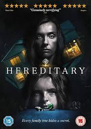
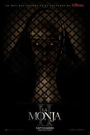
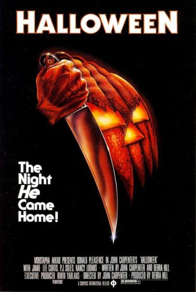
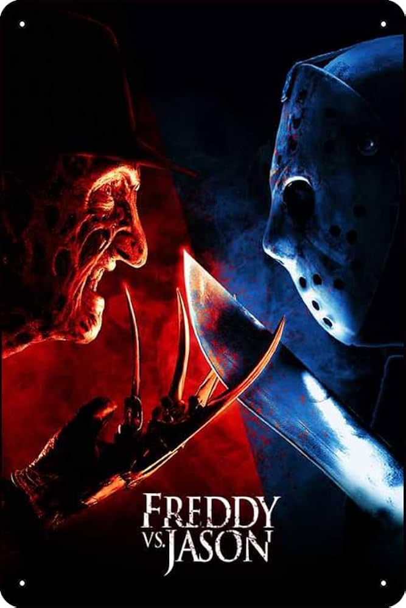
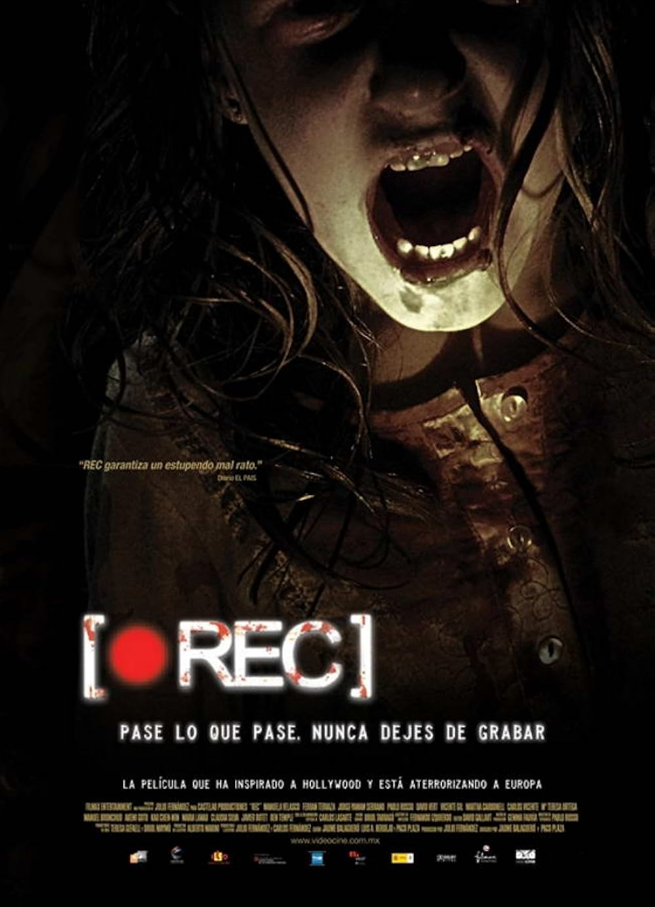
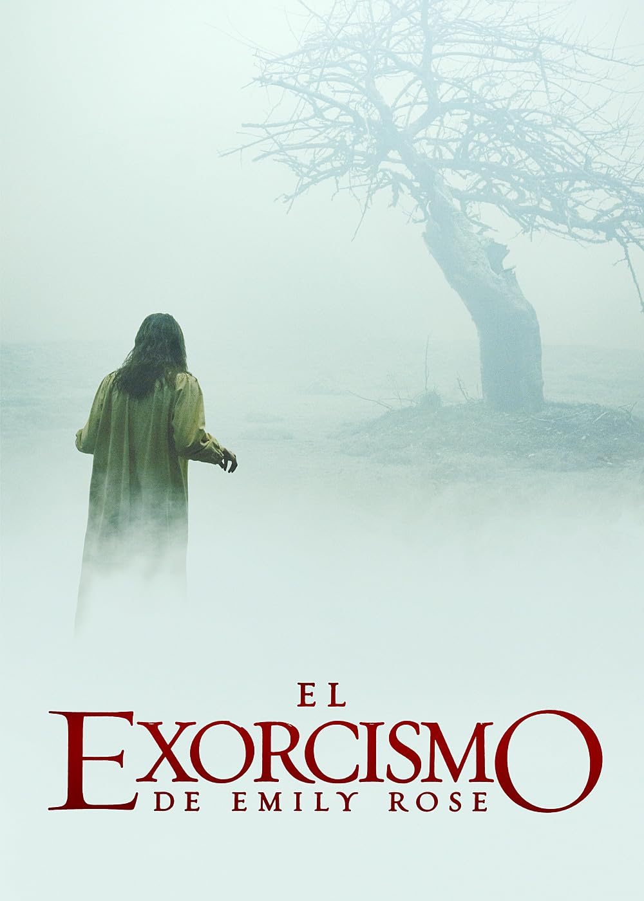
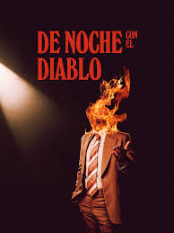

Una familia comienza a experimentar sucesos paranormales al mudarse a una antigua casa. Los investigadores Ed y Lorraine Warren intentan ayudarles enfrentándose a una fuerza demoníaca poderosa.

Reseña: Hereditary
Después de la muerte de la abuela, una familia empieza a descubrir oscuros secretos heredados. La película juega con el terror psicológico y el miedo ancestral.

Reseña: La Monja
En un convento de Rumanía, una joven monja se quita la vida en circunstancias misteriosas. El Vaticano envía a un sacerdote con un pasado oscuro y una novicia a punto de tomar sus votos para investigar. Lo que descubren es una fuerza maligna en forma de una monja demoníaca que amenaza con consumir sus almas.

Reseña: Halloween
Décadas después de sobrevivir al ataque de Michael Myers, Laurie Strode se prepara para enfrentarse nuevamente al asesino enmascarado. Esta entrega del clásico del terror revive la esencia del slasher con una Laurie fortalecida, marcada por el trauma, y decidida a acabar con el mal que la persigue desde hace 40 años.

Reseña: Freddy vs Jason
Freddy Krueger ha perdido su poder porque los habitantes de Springwood ya no lo temen. Para sembrar terror de nuevo, revive a Jason Voorhees, pero las cosas se complican cuando Jason comienza a salirse de control. Dos íconos del cine de terror se enfrentan en una batalla sangrienta por el dominio del miedo.

Reseña: REC
La historia se desarrolla en un edificio de Barcelona que ha sido puesto en cuarentena. Una periodista y su camarógrafo quedan atrapados junto a los habitantes del lugar. Lo que inicialmente parecía ser una simple cobertura de una operación de bomberos se convierte rápidamente en una batalla por la supervivencia frente a un peligro desconocido.

Reseña: El exorcismo de Emily Rose
La historia sigue a Emily, una joven que experimenta episodios aterradores que se interpretan como posesiones demoníacas. Tras su muerte, el sacerdote padre Moore es acusado de negligencia, y la abogada Erin Bruner lo defiende en un juicio.
Se revelan detalles sobre la vida de Emily y su lucha con sus demonios internos, explorando temas de fe, ciencia y escepticismo.

Reseña: De noche con el diablo
En halloween de 1977, un programa de entrevistas nocturno hace una atrevida transmisión en vivo para evitar ser cancelado... Pero una presencia demoníaca se apodera del estudio.
Reseña:Maleficio
Una mujer debe salvarse a sí misma y a su hija de una maldición religiosa que desató hace seis años.
Postada:
Es relevante destacar que varias de estas películas de terror se basan en hechos reales, lo que añade un nivel adicional de inquietud y veracidad a las narrativas presentadas. Estas adaptaciones cinematográficas exploran eventos históricos o relatos documentados, lo que puede intensificar la experiencia del espectador al cuestionar la línea entre la realidad y la ficción.